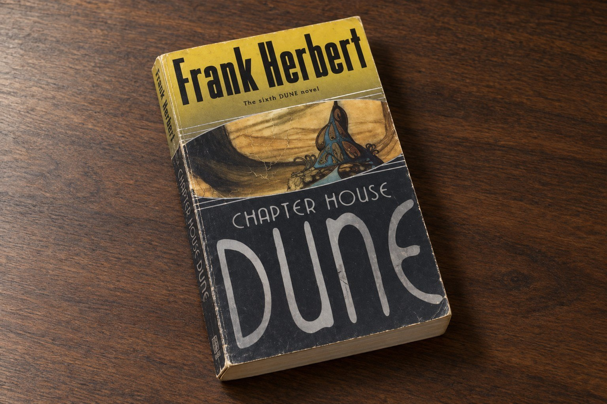
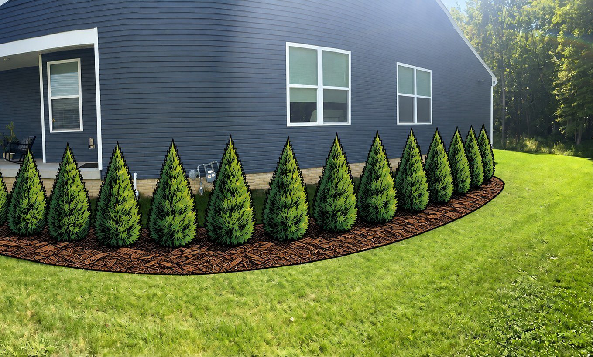

Some things I build. Some things I make easier. Some things I stop to look at a little longer. AI is part of the process—not the point of it.
I use these tools in my own day-to-day life: experimenting with electronics, bringing an old game into the browser, helping with a job search, making a project easier to explain, and asking better questions about the things I encounter.
A few things on my workbench. And a few things on my mind.
You don’t need a grand AI strategy to begin. Start with something you’re curious about—or something you wish you could make.
Things I build · Games
An old adventure. A new way in.
WIP · Planned launch
My browser port of Planetfall brings a classic text adventure into a different form. It’s a personal project at the intersection of software, storytelling, and the pleasure of making something.
My first computer was an Apple //e. Before my teens, I was programming in BASIC, dialing into BBSs with ASCII Express, and exploring Infocom’s text adventures.
Spotting Planetfall in a retro gaming store sparked a question: could I turn this old favorite into a graphical experience? That became my first substantial project using AI agents to build, test, and refine iteratively. I’m documenting the journey as it unfolds.
Things I build · Electronics
From “could I make that?” to the workbench.
I’ve been tinkering with Arduino and other microcontrollers since the early 2010s—from an automated Etch-A-Sketch to a creepy Simon-like game and JoyLite, a maze game controlled with an Atari joystick.
A bigger maze, on the same hardware
Revisiting JoyLite with AI helped me tackle an old memory limit. Together, we packed maze cells into bits rather than bytes and reduced the memory needed to drive the display.
The result: a jump from 3×3 to 8×8 maze tiles—just over seven times the maze area—plus a joystick-controlled difficulty selector. A project that had been sitting in a box had room to grow again.
I didn’t grow up Catholic, but I’ve always been drawn to the craft and tradition in these churches—the glass, the architecture, the symbolism. That knowledge used to feel locked away, behind whoever happened to be around to ask, and my questions don’t always stay inside their expertise.
Look a little closer
Now I can just ask, standing right there. At the Cathedral of St. John the Baptist in Savannah, I pointed my phone at a window and started describing what I actually saw.
What I asked
“I don’t know, it sort of looks like he’s stepping on the head of a dragon.”
That was enough to work out it’s St. George slaying the dragon—which checks out against the Cathedral’s own materials; they’ve even used the window for a Christmas ornament. Small detail, but it’s the kind of thing that used to require finding the right person and hoping they knew it too.
That’s the real shift: I’m not just admiring the craftsmanship anymore, I’m understanding it, at whatever depth I’m curious about, without needing an insider to unlock it for me.

Chapterhouse: Dune
A Second Look · Reading
A conversation between chapters.
I use AI for conversations about books while I’m reading them: a character’s decision, a reference I don’t recognize, or an idea I want to think through. Not a substitute for reading—a way to stay with it a little longer.
Keep the discovery yours
The best conversation starts with what you’ve noticed. Set a clear boundary around where you are in the book, and use the passage itself rather than asking for an unrestricted plot summary.
A question I actually asked
“Who are Daniel and Marty? I understand the baseline—they’re independent Face Dancers—but I don’t understand where they derive their power from, seemingly able to ‘kidnap’ a No-Ship. The wiki offers an explanation, but I’m skeptical it fits the rest of the series.”
That came up reading Chapterhouse: Dune. A wiki page would’ve just handed me an answer, spoilers and all. Talking it through instead let me hold my own read of the series up against the “official” explanation, rather than accepting the first one I found.
Those instructions reduce the risk, but they cannot guarantee a spoiler-free answer. Working from a passage you supply gives the conversation a clearer boundary.
Draft note for Joe: please confirm this doesn’t reveal more than you want for readers who haven’t finished the series.
Concept illustration
Everyday AI · Family & opportunity
A little help with a big next step.
When my daughter was looking for a job in a competitive market, I built a daily job scout to help with the search. A practical use of AI close to home: helping someone you care about look for their next opportunity.
Support the search, not replace the person
The idea is to make the recurring search easier to keep up with. Finding a listing is only the beginning; deciding whether it fits, learning about the employer, and choosing how to apply still belong to the person looking for work.
A starting point for your own scout
“Help me define a daily job search around [roles], [location or remote preferences], and [experience level]. For each potential match, show the original posting and explain why it might fit. Flag anything uncertain, and don’t submit applications or contact anyone.”
Draft note for Joe: add one detail about how your actual scout worked and what your daughter found useful. Keep her identity and application details private; no placement or success-rate claim is implied.

Concept overlay · not a project rendering
Everyday AI · Home & communication
“Here’s what I have in mind.”
I use AI-generated visuals, paired with a written description, to show landscaping companies how I imagine a project looking when it’s finished. It gives us something concrete to discuss and makes the bidding conversation easier.
Turn a mental picture into a clearer brief
A picture helps communicate the look and feel. The accompanying description explains what matters, what should stay, and what I want included in the bid. Together, they give the contractor a clearer starting point than either one alone.
A question you can try
“Using this photo of my yard and these goals, help me visualize a possible finished project. Pair the image with a contractor brief: desired changes, features to retain, questions to resolve, and items to price separately. Distinguish my requirements from your suggestions.”
The visual communicates intent; the contractor still needs to assess the site, dimensions, materials, drainage, and feasibility before pricing the work.
Draft note for Joe: photo added and cropped to drop the street/neighboring houses. Add a short excerpt from your actual contractor brief if you want one alongside it.
The same curiosity, at work
What would you like to figure out?
I don’t just advise people about AI. I use it to build, explore, and learn. At work, the starting point might be a frustrating process rather than a church window—but the habit is the same: ask a good question, try something practical, and check what you learn.